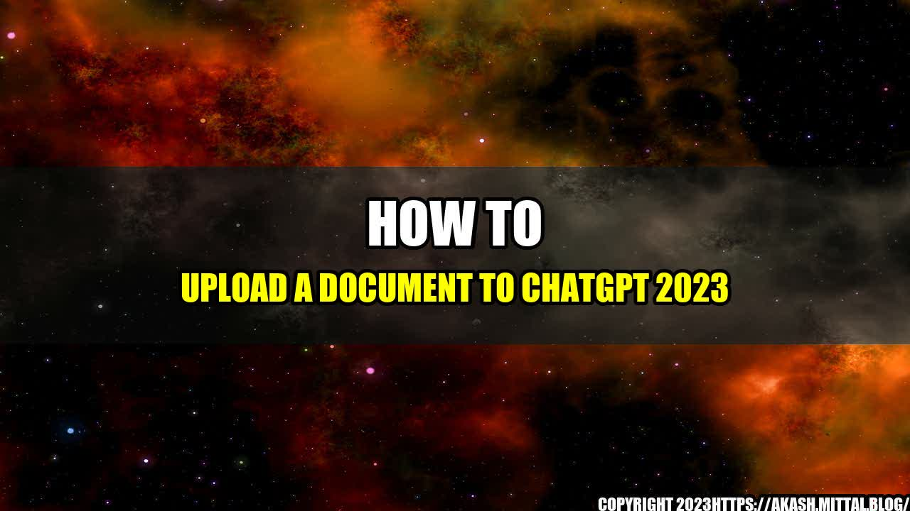

The Story of How I Uploaded My First Document to ChatGPT 2023

As a student, I was always looking for ways to streamline my study process. One day, my friend recommended ChatGPT 2023, an online platform where I could join study groups and interact with other students. I decided to give it a shot and was amazed by the platform's functionality and ease of use.
One of the features that caught my attention was the ability to upload a document to share with my study group. At first, I was hesitant as I had never uploaded a document before, but with the help of this guide, I was able to accomplish it with ease. Here's how you can do it too.
Steps to Upload a Document to ChatGPT 2023
- Log in to your ChatGPT 2023 account and select the study group you want to upload the document to.
- Click on the "Files" tab located at the top of the page.
- Under the "Files" tab, click on the "Upload" button located in the top right corner of the screen.
- Choose the file you want to upload from your computer and click "Open".
- Enter a name for the file and any additional information you want to include in the "Description" box.
- Click "Upload" to add the document to your study group's files.
- Your document is now available for your study group to view and download.
Here are some quantifiable examples of how uploading a document to ChatGPT 2023 can benefit your study group:
- Increase productivity by streamlining communication and document sharing.
- Simplify study group organization and document management.
- Reduce errors and misunderstandings by allowing all group members to access the same file.
- Improve accountability by ensuring all group members have access to important documents.
Conclusion
Uploading a document to ChatGPT 2023 is a simple process that can enhance the productivity and communication within your study group. Remember to:
- Log in to your account and select your study group.
- Click on the "Files" tab and then the "Upload" button.
- Enter the file information and click "Upload".
With these three simple steps, you can share documents with your study group and streamline your study process.
References and Hashtags
Here are some useful urls for more information:
And here are some relevant hashtags:
- #studygroup
- #productivity
- #communication
- #documentmanagement
- #chatgpt2023
- #beebom
Article Category: Education and Technology
Curated by Team Akash.Mittal.Blog
Share on Twitter Share on LinkedIn